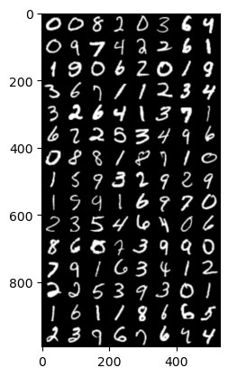

import torch
import torchvision
import numpy as np
import pandas as pd
import matplotlib.pyplot as plt
import fastai.vision.all09wk-2: 중간고사 (예상문제)

중간고사 관련 안내
- 개인노트북, 개인태블릿 등 사용가능함. (배터리 충전기 및 와이파이는 제공하지 않음)
- 부정행위 (카카오톡 채팅을 통한 코드공유, 대리시험 등) 적발시 F 처리함.
- 답안은
.ipynb파일로 제출할 것.
1. 크롤링을 통한 이미지 분석 및 CAM – 30점
(1) 두 가지 키워드로 크롤링을 수행하여 이미지자료를 모아라. (키워드는 각자 마음에 드는 것으로 설정할 것) – 01wk-1 의 HW를 그대로 활용해도 무방
(2) ImageDataLoaders.from_folder 를 이용하여 dls를 만들어라.
(3) resnet34를 이용하여 학습하라.
(4) CAM (class activation mapping)을 이용하여 (3)의 모형의 판단근거를 시각화하라.
2. 생성모형 / GAN – 40점
아래는 torchvision을 활용하여 MNIST 데이터를 불러오고 DataLoader를 생성하는 코드이다.
# Data preprocessing
ds = dataset = torchvision.datasets.MNIST(
root = './data',
download=True,
transform = torchvision.transforms.Compose([
torchvision.transforms.Resize(64), # 이미지를 (64,64)로 resize
torchvision.transforms.ToTensor(),
torchvision.transforms.Normalize((0.5,), (0.5,))
])
)
# Dataloader
dl = torch.utils.data.DataLoader(
ds,
batch_size=120,
shuffle=True,
)(1) iter와 next를 이용하여 데이터로더의 첫번째 배치를 출력하라. 하나의 배치에 몇개의 이미지가 있는가? 이미지는 흑백인가 칼라인가? 이미지의 크기는 얼마인가?
(풀이)
힌트: 120개의 배치가 있고, 흑백이미지이며, 이미지의 크기는 (64,64)임.
(2) 아래의 함수를 이용하여 하나의 배치에 포함된 이미지를 출력하라.
def imshow(xi_real):
plt.imshow(torch.einsum('cij->ijc',torchvision.utils.make_grid(xi_real, padding=2, normalize=True)))(풀이)
힌트: 출력예시는 아래와 같다. 여기에서 xi_real.shape은 (120,1,64,64) 이다.
imshow(xi_real)
(3) 아래의 코드를 이용하여 net_police를 생성하라.
net_police = torch.nn.Sequential(
# Layer1
torch.nn.Conv2d(1, 64, kernel_size=4, stride=2, padding=1, bias=False),
torch.nn.LeakyReLU(0.2),
# Layer2
torch.nn.Conv2d(64, 128, kernel_size=4, stride=2, padding=1, bias=False),
torch.nn.BatchNorm2d(128),
torch.nn.LeakyReLU(0.2),
# Layer3
torch.nn.Conv2d(128, 256, kernel_size=4, stride=2, padding=1, bias=False),
torch.nn.BatchNorm2d(256),
torch.nn.LeakyReLU(0.2),
# Layer4
torch.nn.Conv2d(256, 512, kernel_size=4, stride=2, padding=1, bias=False),
torch.nn.BatchNorm2d(512),
torch.nn.LeakyReLU(0.2),
# Layer5
torch.nn.Conv2d(512, 1, kernel_size=4, stride=1, padding=0, bias=False),
torch.nn.Sigmoid(),
torch.nn.Flatten()
)net_police에 하나의 배치를 넣어보고 각 층별 출력크기를 조사하라.
(풀이)
hint 정답예시는 아래와 같다.
xi_real -- torch.Size([120, 1, 64, 64])
Layer1 -- torch.Size([120, 64, 32, 32])
Layer2 -- torch.Size([120, 128, 16, 16])
Layer3 -- torch.Size([120, 256, 8, 8])
Layer4 -- torch.Size([120, 512, 4, 4])
Layer5 -- torch.Size([120, 1])(4) 아래의 코드를 이용하여 net_faker를 생성하라.
net_faker = torch.nn.Sequential(
# Layer1
torch.nn.ConvTranspose2d(100, 512, kernel_size=4, stride=1, padding=0, bias=False),
torch.nn.BatchNorm2d(512),
torch.nn.ReLU(),
# Layer2
torch.nn.ConvTranspose2d(512, 256, kernel_size=4, stride=2, padding=1, bias=False),
torch.nn.BatchNorm2d(256),
torch.nn.ReLU(),
# Layer3
torch.nn.ConvTranspose2d(256, 128, kernel_size=4, stride=2, padding=1, bias=False),
torch.nn.BatchNorm2d(128),
torch.nn.ReLU(),
# Layer4
torch.nn.ConvTranspose2d(128, 64, kernel_size=4, stride=2, padding=1, bias=False),
torch.nn.BatchNorm2d(64),
torch.nn.ReLU(),
# Layer5
torch.nn.ConvTranspose2d(64, 1, kernel_size=4, stride=2, padding=1, bias=False),
torch.nn.Tanh()
)net_faker에 아래의 noise를 넣어보고 각 층별 출력크기를 조사하라.
ni = torch.randn(batch_size, 100, 1, 1)(풀이)
hint: 여기에서 batch_size는 (1)에서 조사한 batch_size(=120)를 넣을 것
hint: 정답예시는 아래와 같다.
ni -- torch.Size([120, 100, 1, 1])
Layer1 -- torch.Size([120, 512, 4, 4])
Layer2 -- torch.Size([120, 256, 8, 8])
Layer3 -- torch.Size([120, 128, 16, 16])
Layer4 -- torch.Size([120, 64, 32, 32])
Layer5 -- torch.Size([120, 1, 64, 64])(5) 아래와 같이 두개의 optimizr 를 선언하라.
optimizr_police = torch.optim.Adam(net_police.parameters(), lr=0.0002, betas=(0.5, 0.999))
optimizr_faker = torch.optim.Adam(net_faker.parameters(), lr=0.0002, betas=(0.5, 0.999))아래의 세부지침에 맞추어 net_police 와 net_faker를 학습하라.
- 5 epochs 을 진행하여 학습할 것
- GPU를 이용하여 학습할 것
(풀이)
hint 아래와 같은 얼개로 사용하면된다. ?? 와 .. 에 해당하는 부분은 적당히 채울것
# 08wk-1,2 - G 에서 제시된 코드를 살짝 변형하여 풀면 됩니다
for epoc in range(5):
for ?? , _ in dl:
# net_police 을 훈련
...
...
# net_faker 를 훈련
...
...(6) 학습결과를 (2)의 imshow 함수를 이용하여 시각화하라.
(풀이)
hint 시각화 예시는 아래와 같다.
ni = torch.randn(120, 100, 1, 1).to("cuda:0")
xi_fake = net_faker(ni).data.to("cpu")
imshow(xi_fake)